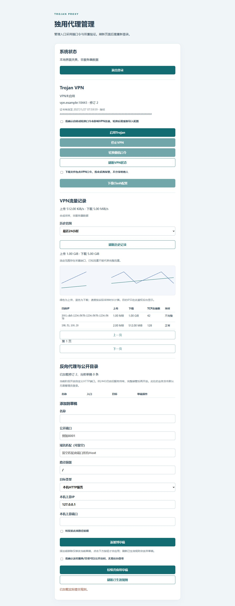

服务器阶段验收
候选提交 5faf4ed 已通过离线包、实际二进制及完整正反向门槛，并升级控制服务和VPN执行器。服务器证据确认统计落库、socket 0660、原VPN凭据保持及其他项目进程未变化；升级后Trojan到Google HTTPS仍为204，错误口令被拒。网关容器未重建，仅通过其受限socket收敛编译策略；80/443尚由旧服务持有。
这是统计功能阶段部署。完整后台设置、默认无JSON启动、80/443交接及24小时长稳尚未完成。
本轮验证
采样器、受限Unix快照、独立SQLite、30天查询与清理、网速/目标IP后台均已接入源码。真实Mihomo TCP/UDP到统计库链路通过；验证与限制。当前未升级线上，停止/重启可能丢失最后一个未采集窗口并标记缺口。自动轮询不延长管理员空闲会话；清空需近期MFA和明确确认，清空后的旧缓冲不会复活。

采集与降级
引擎出站包装层只计实际成功目标和载荷字节，保留TCP半关闭。每2秒输出带实例ID和递增序号的批次；按UTC分钟切桶，长连接持续结算。目标明细有容量上限，达到上限保留全局总量并标记明细缺失。只开放受限Unix只读采集接口，不开放通用Clash API。
存储契约
独立traffic.db，不与认证/修订库共写。批次和最近序号在同一事务提交，重放不重复累计；实例重启更换ID，序号跳跃标记缺口。全局分钟行与目的IP/端口行分开，汇总不能把两者重复相加。数据库限制256MiB，满盘/锁定在鉴权后台显示统计不可用，不能影响代理。
所有查询固定过滤早于UTC当前时刻减30天的分钟桶；写入拒绝未来异常时间，忽略已过期样本。启动时和定时分批清理历史、实例序号及WAL；空间回收不阻塞认证数据库。默认配置备份排除统计库，不保留超期日汇总或原始连接日志。
验证
已知TCP/UDP字节、失败候选IP不计入、半关闭响应、重复批次、乱序/缺序、长连接跨分钟、30天精确边界、时钟异常、容量与故障隔离分别验证。定向移除去重、时间过滤、方向及目标计数保护，必须命中特定断言。未接入的采集通道和图表不能记作已完成。